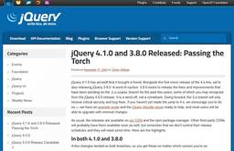

直近1週間の人気フィード
はてなブックマーク数を元に新着優先で並べ替え

さくらインターネット、AIを月額固定料金で提供する「シンプルAI」発表、システムへの組み込み用途を想定 138
138 Publickey
Publickey
さくらインターネットは11月25日と26日の2日間、大規模イベント「SAKURA DEKIRU Conference 2026」を都内で開催。2日目の基調講演で、新サービスとして月額固定料金でAIを提供する「シンプルAI」を発表しました。 ...
2日前

MCPに新機能「Skills over MCP」登場。ツールとの接続だけでなく使い方のスキルもMCP経由で提供 170 Publickey
AIエージェントと外部ツールを接続する業界標準となっているMCP（Model Context Protocol）に、新機能として「Skills over MCP」がβ版として追加されました。 Skills over MCPを利用することで、...
3日前
「Google Workspace MCPサーバ」と「Google Workspace CLI」が正式版としてリリース 63 Publickey
Googleは、Google WorkspaceをAIエージェントが操作するためのインターフェイスとして「Google Workspace MCP Server」と「Google Workspace CLI」が正式版になったことを発表しまし...
3日前

さくらインターネット、AWSやAzureなど他クラウドでバックアップ可能な新ストレージ「Object Storage Suite」（OS2）発表 33 Publickey
さくらインターネットは11月25日と26日の2日間、大規模イベント「SAKURA DEKIRU Conference 2026」を都内で開催。2日めの基調講演で、新たなストレージサービス「Object Storage Suite」（OS2）...
2日前

AI に頼らず素手で挑む！カミナシ社内セキュリティ競技会『ごーとんカップ 2026』 23 カミナシ エンジニアブログ
カミナシの社内セキュリティ競技会「ごーとんカップ 2026」の開催レポート。第4回となる今回は「AI使用禁止」ルールで実施！GitHub Actions から Secret を抜き出したり、WAFログへのプロンプトインジェクションなど、出題内容や当日の様子を紹介します。
1日前

Lean で始める契約プログラミング 162 エムスリーテックブログ
エムスリーテックブログ
こんにちは。 Unit3 / 基盤開発チームを兼務している林です。 Unit3では、主に医学書の電子書籍サービスや、医師の開業サポートなどのサービスを担当しています。 今回は Unit3 テックブログリレー 1 日目の記事です。 Lean で証明付きの安全な開発をするイメージを Gemini で生成しました 定理証明ができるプログラミング言語、Lean Lean というプログラミング言語をご存知でしょうか？ このところ AI で Lean を使って数学などですごい成果が続々と発表されていて、つい先日も Claude を使ってリーマン予想を Lean により証明できたとの発表（Lean コミュニ…
4日前

jQuery 4.1正式版がリリース、内部実装をquerySelectorAllに統一でより高速に。jQuery 3.x系最後となるjQuery 3.8も同時リリース 63 Publickey
jQuery開発チームは、JavaScriptライブラリ「jQuery」の最新版となる「jQuery 4.1」正式版のリリースを発表しました。 また同時にjQuery 3.x系の最後のリリースとなる「jQuery 3.8」も同時にリリースし...
4日前

AWS、DynamoDB互換データベースをローカルマシンで構築可能にするオープンソース「ExtendDB」がバージョン1.0に到達 56 Publickey
Amazon Web Services（AWS）は、同社がクラウドサービスとして提供しているNoSQLデータベース「Amazon DynamoDB」の互換データベースを、Windows、Linux、macOSなどのOSに対応したユーザーのロ...
4日前

software-factory-mode-2026aki skill 193 橋本商会 - Cosense
橋本商会 - Cosense
software-factory-mode pluginの中の、現在の基本skill 移動式Software Factory (2026秋)として、GyazoやHelpfeelの開発環境にshokaiの考えるSoftware Factory 2026秋相当の作業フローを持ち込みたいを実装したもの ほぼ正気を疑う技術 - bugのないvibe codingを目指してで説明してる流れなのだが、内容を知らない人でも、skillを起動するだけでレールに乗れる user領域にインストールしておけば、どこのリポジトリにでも持ち込める https://github.com/shokai/agent-skills/blob/main/plugins/software-factory-mode/skills/software-factory-mode-2026aki/SKILL.mdこのSkillのお陰でAIを並列に3セッションぐらい回し続けていてもぜんぜん疲れないshokai.icon 決まり事を一切考えなくて済むようになる 要求・仕様の擦り合わせ、実装内容をセカンドオピニオンAIでレビュー、レビュー
6日前
DHH氏が開発する「Omarchy 4.5」リリース。一般的なマルチウィンドウをサポート。最速7秒で導入、Appleシリコン対応、Webアプリ版MS Office用ランチャーなど新機能 118 Publickey
Ruby on Railsの作者として知られるDHH氏が主導して開発しているデスクトップ向けのLinux OS「Omarchy」の最新版「Omarchy 4.5」（別名Omarchy Quattro RS）正式版がリリースされました。 Om...
5日前

さくらのクラウド、新ネットワーク基盤、新データベースサービスなど投入。東京リージョン第三ゾーン新設も発表 11 Publickey
さくらインターネットは11月25日と26日の2日間、大規模イベント「SAKURA DEKIRU Conference 2026」を都内で開催し、さくらのクラウドに関して東京リージョンの第三ゾーン、新ネットワーク基盤や新データベースサービスの...
2日前
OpenAI and Cisco introduce Shirudo
30 OpenAI News
OpenAI News
OpenAI and Cisco introduce Shirudo, an open-source runtime for Linux. It helps teams protect running systems while they roll out patches.
4日前

PostgreSQL 19正式リリース。ノンブロッキングなREPACKやI/Oワーカーのオートスケールなど新機能 30 Publickey
オープンソースのリレーショナルデータベース「PostgreSQL」の最新版となる「PostgreSQL 19」正式版がリリースされました（日本語のプレスリリース）。 PostgreSQLは毎年9月もしくは10月にメジャーバージョンアップが行...
5日前
Perplexity and Intelligence 18 OpenAI News
How perplexity measures progress in AI models, and why it could help developers establish a shared approach to evaluating emerging capabilities.
6日前
Inkling 2 Mini(26B-A3.4B(5.5B))を試す。小型GPUでちゃんとコーディングできる 3 きしだのHatena
きしだのHatena
サンフランシスコのAIラボ、Thinking MachinesからInkling 2 Mini(26B-A3.4B)が出ていたので試しました。 https://thinkingmachines.ai/model-card/inkling-2-mini/ VRAM16GBや8GBでもまともにコーディングができる、とても使いやすいモデルです。コーディング能力も高い。 いままでこのサイズだと、Qwen3.8 27BやQwen3.6-35B-A3Bがコーディングモデルとして挙げれたけど、コーディング能力の高い27BのDenseモデルは16GBには重すぎ、35B-A3BはMoEではあるけど基本パラメータ…
6日前